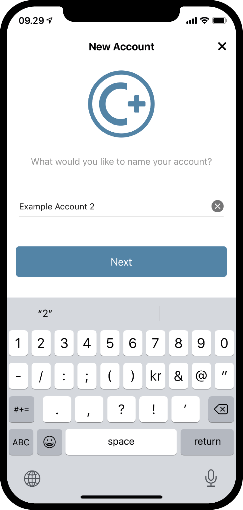
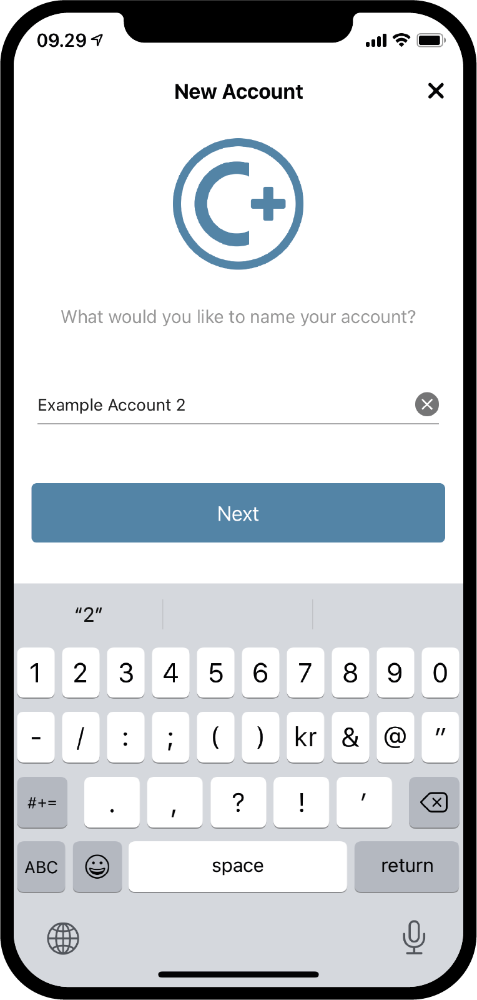

Concordium ID: Get started with accounts and transactions¶
Before following this guide you should have finished requesting your initial account and identity, as described in the previous chapter.
Create a new account¶
Before getting into how accounts, their balances and transactions work, let’s create a second account. Start by going to the Accounts page. In the upper right corner you should see a plus sign. Press that to continue. On the next screen you will be asked to name your new account. In this example we will choose the name Example Account 2, but you can choose whichever name you want.
 

{kind=link}
When pressing Next, you will be met with a screen on which you must decide which identity to use to open the new account. So far you probably only have one, but if you have more you can pick whichever identity you want from the list. By clicking on an identity, you will be taken to the next screen. When creating a non-initial account, i.e. an account that is not created upon identity creation, you can choose to reveal a number of Attributes. This is not necessary, and if you do not have a specific reason to do so, we recommend not revealing any, as revealed attributes go on-chain and cannot be removed.


If you do press the Reveal account attributes button, you will be taken to the following page. You can tick off the attributes you would like to reveal, and then press Submit account. Pressing Submit account on this or the previous page, will take you to the final account creation page, which will give you a short overview and tell you that the account has been submitted.


By pressing Ok, thanks on the submission overview, you will be taken back to the account page. You might see that your new account is still pending, as it can take a few minutes to finalize on chain. If you have not tried to do so yet, you can try pressing the downwards facing arrow on one of the account cards, to see that it will fold out the card. This reveals two new pieces of information, at disposal and staked. The at disposal field will tell you how much of the accounts balance is at available for use at the given moment, and the staked amount you can read more about on the managing accounts page.


Make a transaction¶
Next up, try pressing the Balance area of your newly created account. On this screen you can see the current balance of your account, and at this point, it will also let you request 100 GTU to use on the Testnet. The request for 100 GTU is a Testnet feature, and for Testnet 4 it will actually transfer 2000 GTU to the account, even though the button says 100. The GTU drop is only available on an account once. By pressing it, you will notice a transaction appearing. This will be pending for a bit, and after a while 2000 GTU will be added to your account.


Now that we have some GTU in our account, let’s try making a transaction. Press the SEND button to do that. On the next page you can input the amount you want to transfer, and select a recipient. In this example we will transfer 10 GTU.


Having decided on an amount, we will now choose the recipient. To do this, press the Select Recipient or shield amount button. On this page you can search for recipients in your address book or add your recipient by scanning the receiving account’s QR code. As you can see in the screenshot, we only have one recipient saved, Example Account 1. Above that, we have the option to Shield an amount, but we will get back to that later. We will choose Example Account 1 as our recipient in this example.


With the amount and recipient chosen, we can press Send Funds to continue. By doing this we are met by a confirmation screen on which we can verify the amount, recipient and sending account. By pressing Yes, send funds, we will verify ourselves using a passcode or biometrics, and then the transaction is submitted to the chain. It might take a bit for the transaction to finalize.


We can now see that the Example Account 2’s Transfers log shows that the amount has been deducted, plus a fee. All transactions will cost a fee, and depending on the type of transaction the fee might differ. Pressing the transaction will let you see more details.


Move an amount to the shielded balance¶
If we go back to the Accounts screen, we can now see that the 10 GTU has been transferred to the Balance of Example Account 1. As you might have noticed before, the accounts also have a Shielded balance. In short, the shielded balance is for keeping shielded (encrypted) amounts of GTU on the account. Lets’ try adding some shielded GTU to our Example Account 2. Start by pressing the Shielded Balance area of the account card.


Next, press the SEND button again and enter an amount of GTU to shield, which is the action of adding some GTU to the Shielded Balance. After doing that, let’s press Select Recipient or shield amount again. Instead of choosing a recipient, this time we will press Shield amount.


We can now continue and confirm the transaction, just like we did before with the regular transfer. The transaction might take a moment to finalize on the chain.


By going back to the Accounts page, it can now be seen that there is 10 GTU on the Shielded Balance of Example Account 2. If the Shielded Balance area of the account card is pressed, we can see that there is a Shielded amount transaction in the shielded balance transfers log. Making a shielding transaction will also cost a fee, but this fee will be deducted from the regular balance of the account. Try going back and have a look at the transfer log of the regular Balance.


Make a shielded transfer¶
Having some shielded GTU available, we can now try making a Shielded transfer, which means that we can make a transfer with an encrypted amount of GTU. The first step is to browse to the shielded balance page of the account containing shielded GTU, if you are not already there. Then press the SEND button. You will now be able to enter an amount and choose a recipient. In this example we have chosen to transfer 2 GTU. When pressing the Select Recipient or unshield amount button, you will be able to choose a recipient. We will choose Example Account 2 in this example.


With the amount and recipient in place, you can now continue. Just like the other transactions you will now see a confirmation screen, and by continuing from that you will be able to verify yourself with a passcode or biometrics, and then submit the shielded transaction to the chain. Again, the transaction might take a moment to finalize on the chain.


Now, if you go back to the Accounts screen, you should be able to see that a little shield has appeared beside the amount on the Shielded Balance of the receiving account. This indicates that there are newly received shielded transactions on the shielded balance. Try pressing the shielded balance, and notice that you have to enter a passcode or use your biometrics to enter it. This happens because you need to decrypt received shielded transactions, before you can see the amount.


Unshield an amount¶
After the decryption, the amount is now visible in the shielded balance and on the account card on the Accounts screen. Now, what if we want to move some GTU from a shielded balance to a regular balance? Let’s try to move the 2 GTU to the regular balance via the action of Unshielding an amount. To do this, press the SEND button in the shielded balance. Enter 2 as the amount, and then press Select Recipient or unshield amount. Choose Unshield amount.


Now finish the transaction like you did with the other ones, and try browsing to the regular balance of the account to see the unshielding. If the transaction has finalized on chain, you should now be able to see that an Unshielded amount has ticked in on the regular balance. Notice how it is not 2 GTU, even though the amount you just unshielded was 2. This is because the fee for making any transaction, including an unshielding, will be deducted from the regular balance of the account responsible for the transaction.


Share your account address¶
If you want to share the address of your account, this can be easily done by pressing the Address button. This will take you to a page where you have multiple options of sharing the account address. Try pressing the Share button, and share your address with someone.


Inspect a release schedule¶
On the Concordium blockchain it is possible to make a transaction that releases the transferred amount over time. This is called a transfer with a schedule. For now we will not get into how to make such a transfer as it cannot be done from Concordium ID, but let’s check out how a release schedule can be inspected. If you receive a transfer with a release schedule, you can press the burger menu in the upper right corner of the balance screen. This will allow you to press Release schedule, and by doing this you will be taken to a screen containing information on how much GTU will be released and when. If you want to learn more about how to make a transfer with a release schedule, you can have a look at the Concordium Client and Transactions pages.


Support & Feedback¶
If you run into any issues or have suggestions, post your question or feedback on Discord, or contact us at testnet@concordium.com.